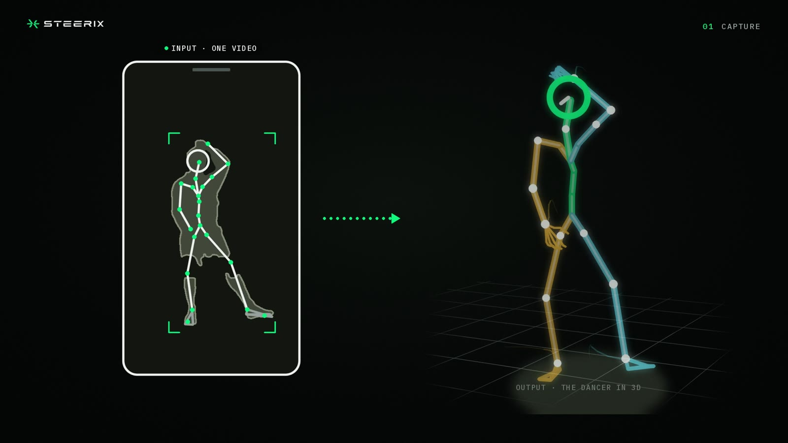
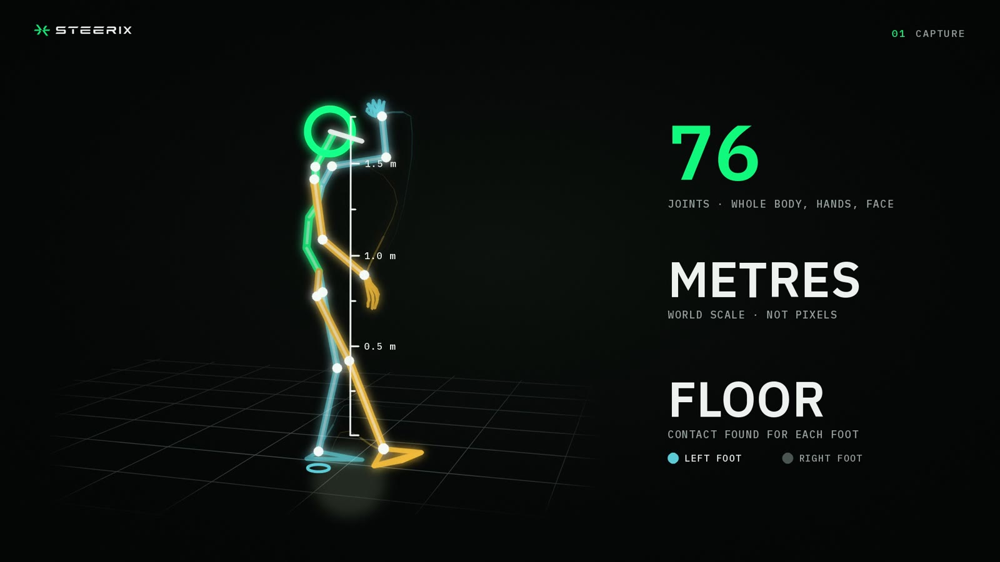
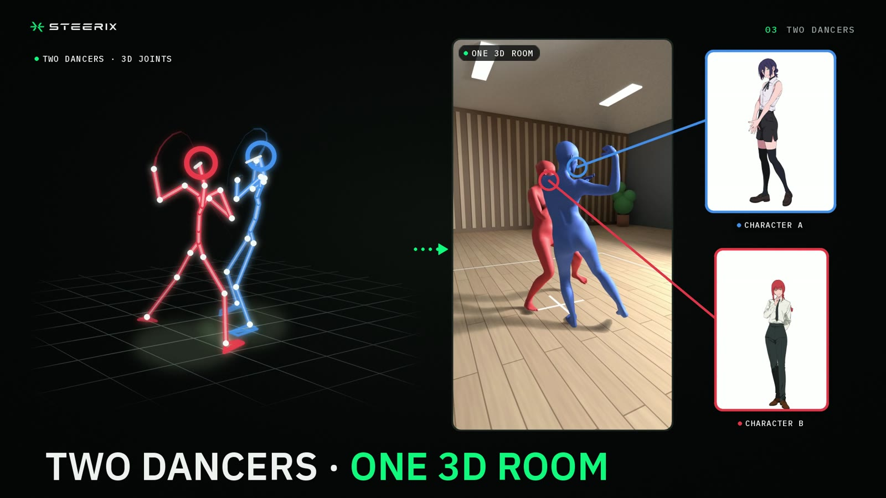
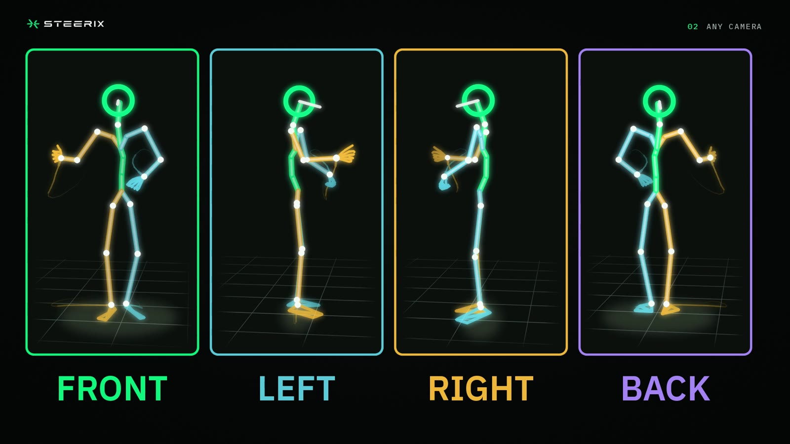
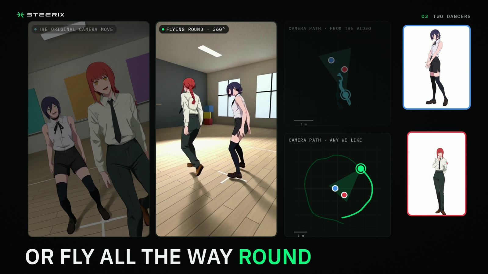
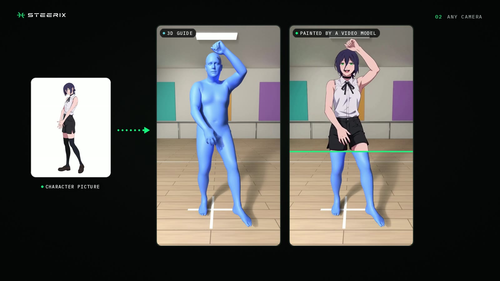
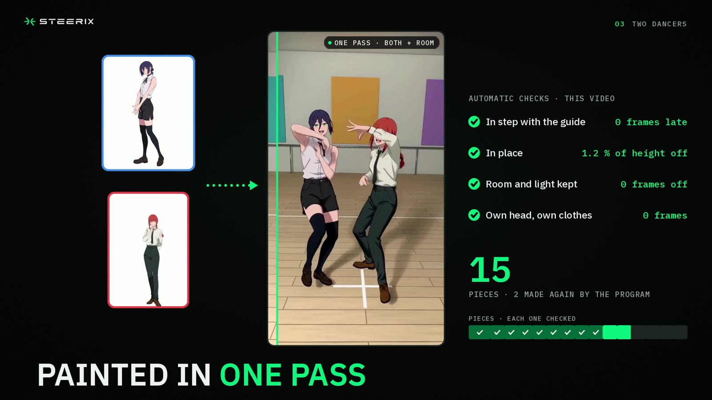

홍보 영상에 들어간 핵심 기술: 영상 한 편으로 캐릭터가 같은 춤을 추는 영상을 만드는 방법
영상을 다른 영상으로 바로 바꾸지 않는다. 먼저 영상 속 사람의 움직임을 3D 관절로 뽑고, 그 관절로 3D 몸을 다시 만든다. 그다음 영상 생성 모델이 3D 몸을 안내 삼아 캐릭터를 그린다. 동작과 카메라는 3D가 정하고, 생김새는 캐릭터 그림이 정한다. 그래서 원본에 없는 방향에서도 찍을 수 있고, 두 사람을 한 방에 세울 수도 있다.
| 단계 | 들어가는 것 → 나오는 것 | 핵심 방법 | |
|---|---|---|---|
| 1 | 영상 → 관절 | 춤 영상 → 장마다 SMPL-X 관절 회전, 체형, 몸 위치, 발 닿음, 카메라 | 사람 영역 추적, 2D 관절, 깊이로 잰 화각과 바닥, 시간 순서를 보는 신경망(ExMR) |
| 2 | 관절 → 3D 몸 | 관절 값 → 바닥 위에 선 3D 몸과 찍을 카메라 | SMPL-X 몸 모델, 보이는 바닥으로 세우기, 여러 명을 한 방에 |
| 3 | 3D 몸 → 영상 합성 | 3D 몸 + 캐릭터 그림 → 캐릭터 영상 | 색 인형 안내 영상 + 영상 생성 모델, 1.6초 조각, 자동 검사와 다시 만들기 |
영상 속 춤추는 사람의 움직임을 장마다 3D 관절 값으로 바꾼다. 결과는 SMPL-X 형식이다.


| 1 | 사람 영역 | SAM 3(영상 분할 모델)가 춤추는 사람의 영역을 장마다 따라간다. 두 사람이면 A와 B로 나눠 끝까지 따라간다. |
| 2 | 2D 관절 | Sapiens2가 사람 영역 안에서 몸·발·손의 2D 관절을 찾는다. |
| 3 | 카메라 | MoGe-2(사진 한 장에서 거리를 재는 모델)로 화각과 바닥면을 잰다. 카메라 회전은 사람 영역을 가린 배경의 움직임으로 잰다. |
| 4 | 3D 자세 (ExMR) | 장마다 SAM 3D Body의 몸 특징(숫자 1024개), HaMeR의 손 특징(손마다 1024개), 2D 관절 23개, 사람 상자, 카메라 회전을 받는다. 시간 순서를 보는 신경망(12층, 최대 120장을 함께 봄)이 이것으로 SMPL-X 관절 회전(몸 21, 손가락 30), 체형, 몸 방향과 이동, 발·손목이 멈췄는지를 낸다. 이어서 발과 손을 한 번 더 다듬는다. SAM 3D Body와 HaMeR는 학습된 그대로 고정해서 쓰고, 그 위의 신경망만 합성 영상(BEDLAM, BEDLAM2)과 실제 촬영(H36M, 3DPW, ARCTIC)으로 학습되어 있다. |
| 5 | 보정 (직접 만든 규칙) |
|
15/15 사람이 손대지 않은 한 번 실행, 49분 |
1.2~1.6% 관절을 화면에 다시 겹친 차이 (몸 높이 대비, 영상마다 중간값) |
3~4cm 바닥에 디딘 발의 높이 |
나오는 파일: results.npz(SMPL-X 값과 관절 76개, 미터, 바닥 y = 0), motion_amass.npz(AMASS 형식 SMPL-X), motion.bvh(뼈대 55개).
관절 값으로 3D 몸을 다시 만들어 바닥 위에 세우고, 찍을 카메라를 정한다.


| 1 | 몸 만들기 | SMPL-X(관절과 몸 표면을 함께 가진 표준 사람 모델)에 다음 값을 넣으면 몸 표면 10,475점이 나온다: 몸 방향, 몸 21관절과 손가락 30관절의 회전, 체형 10개. 관절이 돌면 표면이 따라 움직인다. 다시 만든 몸의 관절이 저장된 관절과 3 cm 안에서 맞는지 검사한다. |
| 2 | 바닥 위에 세우기 | 발이 바닥에 닿는 장을 기준으로 바닥을 높이 0에 맞춘다. 체형은 영상 하나에 하나라서 키가 흔들리지 않는다. |
| 3 | 한 방에 여러 명 | 두 사람은 각자 몸을 만든 뒤, 같은 바닥과 같은 카메라를 기준으로 한 방에 놓는다. 위아래 방향은 원본 화면의 바닥에서 잰다. 3D 추정만 쓰면 손에 든 카메라 기울기의 87 %가 몸 기울기로 들어갔기 때문이다. 겹침을 풀고, 빠른 움직임은 1.25배로 키운다. 영상 생성 모델이 빠른 움직임을 0.8배쯤으로 줄여 그리기 때문이다. |
| 4 | 카메라 | 원본 영상의 카메라를 장마다(위치, 방향, 기울기, 화각) 그대로 다시 쓰거나 새 카메라를 둔다(360도 회전, 정면·옆·뒤, 가까이). 새 카메라는 몸이 화면에 들어오는 거리를 계산하고, 몸을 부드럽게 따라간다. |

3D 몸을 단순한 색 인형으로 그린 안내 영상을 만들고, 영상 생성 모델이 그 위에 캐릭터 그림의 생김새를 입힌다. 동작과 카메라는 안내 영상을 따르고, 생김새는 그림을 따른다.


| 1 | 안내 영상 | 고정된 3D 연습실에 3D 몸을 색 인형(첫째 파랑, 둘째 빨강)으로 세우고, 2의 카메라로 그린다. 사람이 없는 빈 방 영상도 함께 그려 검사에 쓴다. |
| 2 | 생성 모델 | MiniMax H3(참고 그림과 참고 영상으로 영상을 만드는 생성 모델)에 캐릭터 바꾸기 추가 학습(Character Swap LoRA)과 8단계 빠른 생성(FL2V Turbo)을 얹는다. 넣는 것은 안내 영상, 캐릭터 그림, 지시문 세 가지다. 지시문은 "파란 인형을 그림 1의 캐릭터로, 빨간 인형을 그림 2의 캐릭터로 바꾸고 방은 그대로 둔다"는 뜻이다. 여기에 그림을 읽는 모델(Qwen2.5-VL)이 쓴 생김새 한 문장이 들어가는데, 이 문장이 없으면 두 캐릭터가 섞인다. |
| 3 | 한 번에 그리기 | 두 사람과 방을 한 번에 그린다. 따로 그려 붙이면 오린 자리에서 캐릭터가 잘리고, 바닥에서 미끄러지고, 그림자가 없다. |
| 4 | 조각과 이음 | 1.6초(39장) 조각으로 만들고, 이웃 조각과 5장을 겹쳐 잇는다(앞 조각의 끝 5장으로 시작하거나, 뒤 조각의 첫 5장으로 끝난다). 모두가 또렷이 보이는 조각을 먼저 만들고 앞뒤로 이어 간다. 긴 조각(107~124장)은 1초 뒤부터 0.65초 늦어지는 일이 잦았다(20개 중 8개). 39장 조각에서는 같은 곳이 첫 시도에 맞았고, 한 장을 만드는 시간도 4.6초에서 3.3초로 줄었다. |
| 5 | 검사와 다시 만들기 | 조각마다 다섯 가지를 잰다. ① 방이 남았는지 ② 머리가 다른 사람 몸에 붙지 않았는지 ③ 인형이 남지 않았는지 ④ 동작이 안내 영상보다 늦지 않은지(빈 방과 다른 곳을 캐릭터로 보고, 그 윤곽을 앞뒤 장의 인형 윤곽과 맞춰 본다) ⑤ 옷이 상대 것으로 바뀌지 않았는지(인형 자리의 몸 색). 걸리면 다른 잡음으로 세 번까지 다시 만든다. |